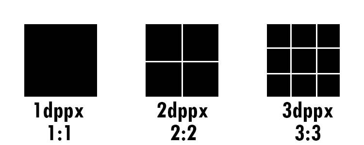
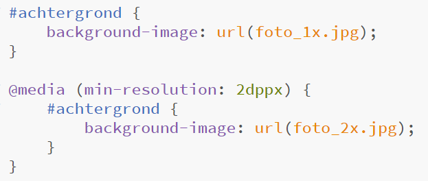

Hoofdstuk 2: media queries
Je leerde in het eerste semester al media queries schrijven bij het linken van een CSS-bestand. Bij het begin van het tweede semester leerde je de mediaqueries in het CSS-bestand op te nemen, volgens het 'mobile first'-principe (en dus van klein naar groot ontwerp met min-width).
Wat we nu nog aan die kennis willen toevoegen, is dat je ook nog andere feature-testen kunt schrijven, zoals je kunt nakijken op toelichting media features.

Wil je andere achtergrondafbeeldingen leveren wanneer de device pixel ratio (DPR) niet 1 maar hoger is, dan kun je daar ook media queries voor schrijven. De code die hiervoor nodig is, werd bijgestuurd door het W3C en in deze nieuwe vorm geïntegreerd in de recente browsers.
Een voorbeeld met een achtergrondafbeelding in lage resolutie die vervangen wordt door een achtergrondafbeelding met een hoge resolutie op een scherm met pixeldichtheid minimaal 2:

Opgelet: je hoeft geen mediaqueries in CSS te schrijven om een andere afbeelding te tonen in een <img>-tag wanneer de device pixel ratio (DPR) niet 1 maar hoger is. Dat kwam eerder al aan bod in 'deel 6: responsieve afbeeldingen'.